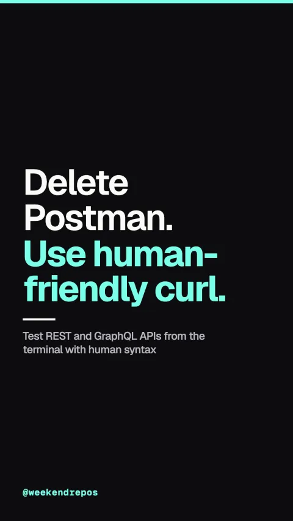

httpie
Test REST and GraphQL APIs from the terminal with human syntax

Delete Postman. Use human-friendly curl.
Clean key-value syntax replaces messy curl flags.
First, stop memorizing flags. HTTPie uses intuitive key-value pairs, automatically sets content headers, and formats JSON out of the box.
Intuitive key-value syntax & automatic headers
Colorized JSON output and automatic type inference.
Second, just type http, your endpoint, and fields. HTTPie infers booleans, numbers, and strings, and prints colorized output.
Automatic JSON formatting & colorization
Persistent auth sessions and download modes.
Third, it supports persistent authentication sessions, file uploads, proxy routing, and offline inspection.
Built-in sessions, auth tokens, and proxies
Over 34,000 stars on GitHub.
HTTPie is open source in Python with over thirty-four thousand stars on GitHub and official binaries for every platform.
github.com/httpie/cli · BSD-3-Clause License